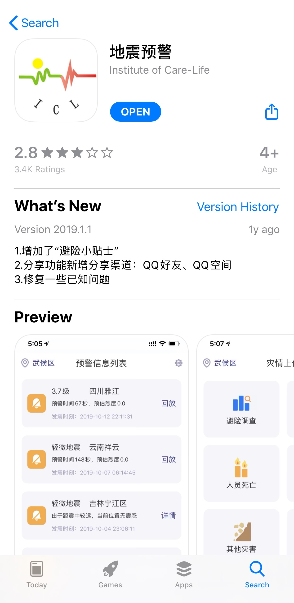

最后一个软件为：地震预警
软件由成都高新减灾研究所自主开发，可以提前几秒到几十秒预警地震，对受地震波及的区域进行预警
您也可以通过软件在灾后上报灾难险情，以便精准的救援

在软件首页，您可以查看各地地震详情，包括地点、预警震级、发震时刻、震中经纬度等关键信息
您也可以点击“上传”来进行避险调查、房屋破坏情况等，以便救援迅速有效进行
平时闲暇时，您还可以在软件上了解地震相关科普知识，防患于未然
以上就是三个软件的介绍，希望介绍的软件能为大家的生活带来便利！